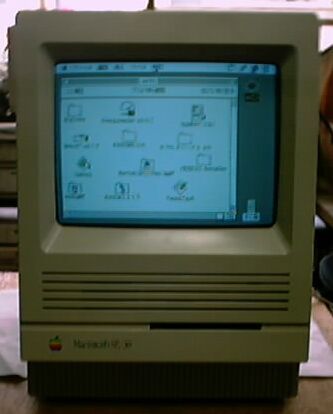

SE30のしましまっく症状について

このSE30は数年前に、ジャンク屋で見つけ、買ったものですが、今までに 2度、もう直らないと思うほど、ひどい故障をしています。最初は、HD交換中
に、どこかで電源がショートし、ロジックボードが煙を出したときで、見ると メモリーの付近にある、ICの足が、熱で溶けてしまっています。だめでもとも
とと思い、ICのパッケージをやすりで削り、金属部を出して、プリント基盤と 半田付けし、回路を復元したところ、直ってしまいました。2度目は、表題に
ある「しましまっく」症状です。電源を投入したあと、画面に市松模様や ゼブラ模様が出て起動音ももしない。これは、SE30では良く知られた故障の 症状のようで、アナログ回路や、CRT回路が立ち上がったのに、CPUが起動し
ないときに起きるようです。振動を加えると、正常になったりするので、 接触不良と考え、電源やその他、力の加わりそうなコネクタ部などの半田 付け部分を、徹底的に半田付けし直しをやりました。結果として、快調に
起動するようになりました。それから、しばらくしてつい最近、久しぶりに 電源を入れてみると、再び「しましまっく」になっており、しばらくそのまま にしておくと、立ち上がりました。なにしろ1989年製ですので、
ロジックボードの部品が相当劣化しており、コンデンサなどの部品取替えを しなければならない状況だと考えられます。しかし、ロジックボード上の部品 は非常に細かく、老眼の私には部品取替えなど不可能に思え、どうしようかと
考えているところです。「しましまっく」についての対策は、「OldMac 超蘇生マニュアル」日本文芸社、に詳しく出ており、参考にさせてもらいまし た。
2002年3月7記載
しましまっく症状のその後
先週、7500らしいボード３千円で買ってきました。袋を開けると、何とコンデンサ らしい部品が、パラパラと落ちてきました。袋から出てきたのは１個だけでしたが、
よく見ると、16v47ﾏｲｸﾛの電解コンデンサが、６個脱落しています。それでも試しに 必要なパーツを取り付け、バラック状態で活かしてみると、ちゃんと動作します。
バイパスコンデンサなので、無ければ無くても動作はするのでしょうか。気になるので、 いらないロジックボードから、同型のコンデンサをはづして、ハンダ付けしておきました。
それで、SE30のことを思い出し、余勢を駆って、問題のコンデンサC6、50v1ﾏｲｸﾛを交換 しました。ちょうど同じのが無かったので、50v2.2ﾏｲｸﾛを使いました。この１個だけで
しましまが無くなり、立ち上げも良好です。残る問題は、音声が小さく、かすかに 聞こえる状態で、起動音のないMACは何か、拍子抜けします。次に元気が出たときに
直したいと思います。
68Kマッキントッシュのページに戻る